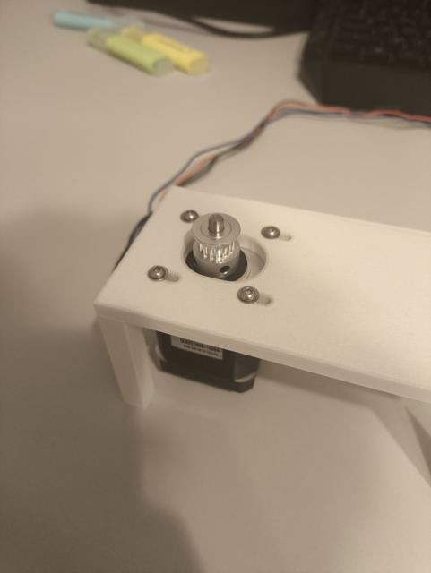
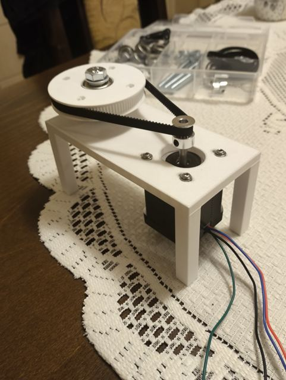
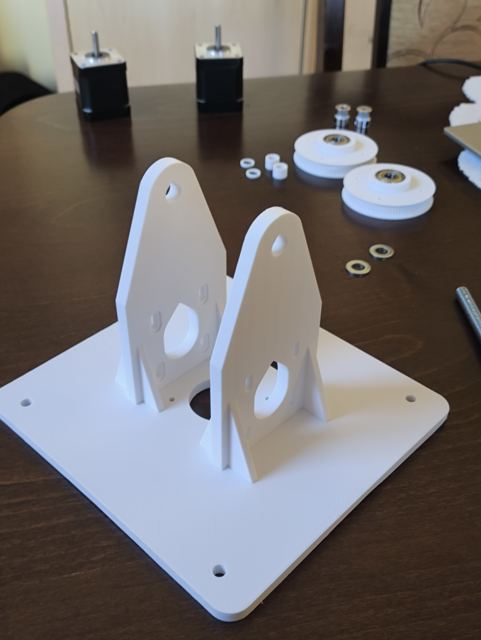
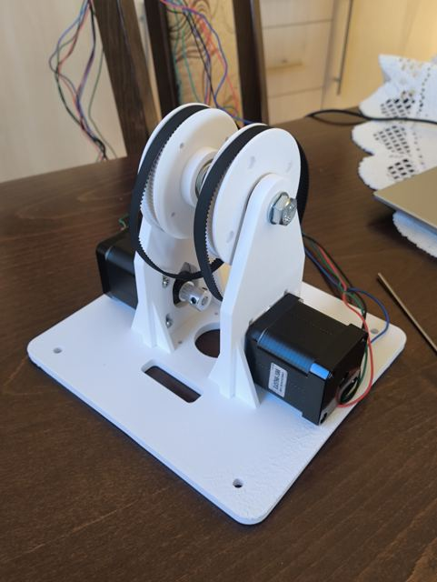
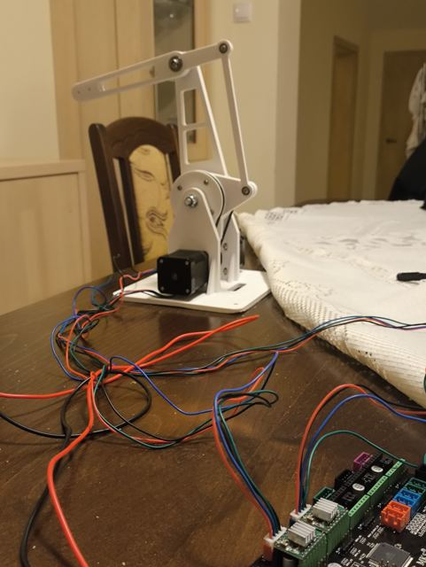
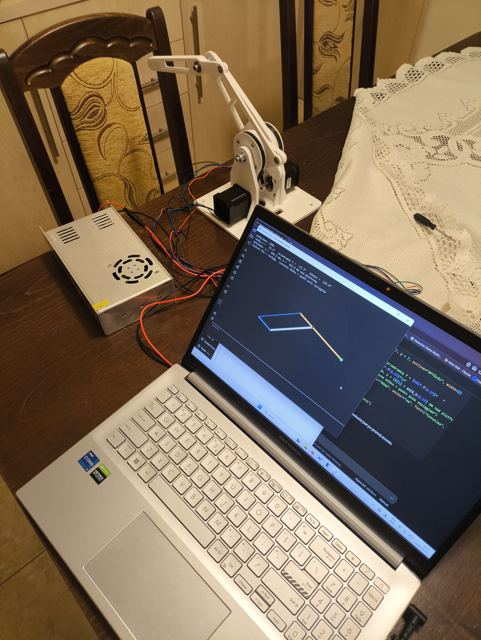
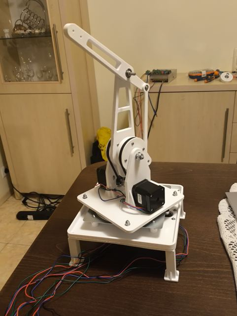

Three-joint robotic manipulator
A robotic arm with three joints that I designed and built myself — mechanics, electronics and control software. It is driven from my own Python application with a live 3D model of the arm, which sends commands to Arduino firmware running the stepper motors.
- Python
- Arduino IDE
- Stepper motors
- Belt drives
- Kinematics
- 3D visualisation
- Degrees of freedom
- 3
- Drive
- Steppers + belts
- Control
- Python ↔ Arduino
- Status
- Active development
Demo
The arm follows its digital twin
In the video the physical arm moves together with its 3D model in my control application. The app shows the current angle of every joint and the position of the end effector in real time.
- Live 3D model of the arm and its workspace
- Joint angles and end-effector position on screen
- Keyboard control of the arm, connection to the controller over USB
Technical overview
How it works
The system is split into a high-level application on the computer and low-level firmware on the microcontroller.
Control app
Python application: user input, 3D model of the arm, computing joint angles from the arm's geometry.
- Python
Communication
Target joint angles are sent to the microcontroller over a USB serial connection.
- USB serial
Firmware
Arduino firmware converts angles into step sequences and drives the stepper motor drivers.
- Arduino IDE
- C++
Mechanics
Stepper motors move the joints through belt drives; the whole arm rotates on a turntable bearing.
- Stepper motors
- Belt drives
Mechanical design
- 3 revolute joints
- Belt reduction
- Turntable base
- Custom-designed parts
Electronics
- Microcontroller board
- Stepper drivers
- Dedicated power supply
Software
- Python
- Arduino IDE
- Kinematics
- 3D visualisation
Process
Build log
From the first motor mount to a working arm — click a photo to enlarge.

First stepper motor mounted under a base plate. 
Belt drive — pulley and belt transferring motion from the motor. 
Shoulder bracket on its base plate, with motors and pulleys waiting to be fitted. 
Shoulder assembled: two stepper motors driving the joints through belts. 
First arm link attached. 
Arm standing and wired up to the controller board. 
First motion tests, controlled from the laptop. 
New base plate with the motor for the rotation joint. 
Full arm with both links in place. 
Turntable bearing for rotating the whole arm. 
Arm mounted on the rotating base — all three joints together. 
The manipulator on its stand, controlled from the laptop.